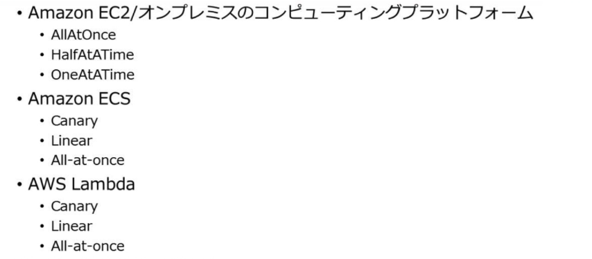
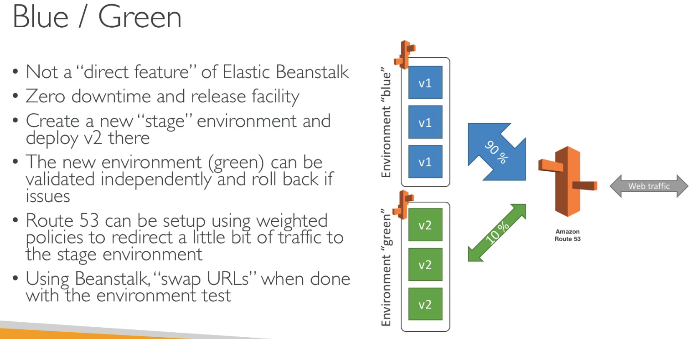
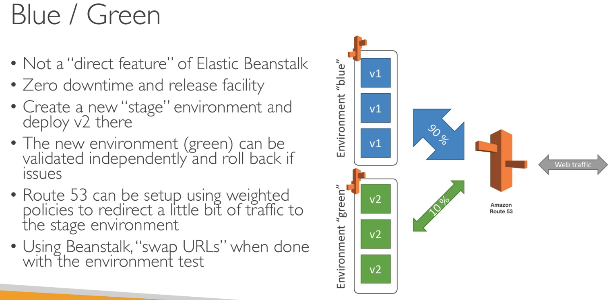

デプロイ戦略概要
用語
カットオーバー
- 新バージョンまたは別システムへの移行
ダークローンチ
- フィーチャーフラグで一部のインスタンスで機能を有効にする。
セグメンテーション
- デプロイを小さなチャンクに分割することでリスク軽減。
- リージョン, AZ, インスタンスごとなどで分割。
- タグや Auto Scaling グループでグループ化。
インプレース
- 稼働中インスタンスを落とさずにデプロイする。
- インスタンスが並列しないので低コスト。
- CodeDeploy, Beanstalk, OpsWorks でサポート。
イミュータブル
- インプレースの反対。新しいインスタンスまたは並列環境を作ってデプロイする。
- EC2 Auto Scaling: AutoScalingReplacingUpdate
ローリング
- インプレースまたはイミュータブルの複数形。ダウンタイムなし。
- 本番環境の稼働中インスタンスを一部切り離してデプロイし、再びオンラインに戻すを繰り返す。
- CodeDeploy: インプレースの OneAtATime, HalfAtATime
- Beanstalk: ローリング, 追加バッチとローリング
- EC2 Auto Scaling: AutoScalingRollingUpdate: 既存 Auto Scaling グループ内で新しいインスタンスを立ててローリングアップデート
Blue/Green
- Blue と Green の２つの並列環境を作成してトラフィックを振り分ける。(ローリングは単一環境)
- トラフィックルーティングの仕組みが必要。
- 原理的にイミュータブルになる。
- ロールバックが容易。
- AllAtOnce: 一度で切り替え
- Canary: 比率を指定して２段階目で切り替え。
- Linear: 段階的に振り分け。
- CodeDeploy, Beanstalk, OpsWorks, CloudFormation
カナリアリリース, A/B デプロイ
- A/B 環境に比率を設定してトラフィックを流す、Blue/Green の一種。
- 一部ユーザでの新機能を Beta テストやフィードバック収集。
Blue/Green デプロイ
概要
- ブルー (既存環境) / グリーン (新しいバージョン) をスイッチ
- 一般的な手法
- DNS カットオーバー
- Auto Scaling グループの交換
AWS での実現方法
Ref. https://d1.awsstatic.com/whitepapers/AWS_Blue_Green_Deployments.pdf
Route53 CNAME 切り替え (AllAtOnce)
- エイリアス (CNAME) が指す ELB の DNS 名を切り替える。


Route53 加重ラウンドロビン
ELB ターゲットグループ切り替え
- Blue に加えて Green の Auto Scaling グループを ELB のターゲットに登録。
- Blue のインスタンスを段階的にスケールインして減らしていく。
ALB 加重ターゲットグループ
- Blue/Green のターゲットグループに重みを指定。

Auto Scaling スケールアウト/スケールイン
- デフォルトの終了ポリシーが古い起動設定により起動されたインスタンスから終了させることを利用。起動テンプレートでAMIを変更後、インスタンス数を増やしてから減らすと自動的に古いインスタンスがなくなる。
- 1. Auto Scaling グループの起動設定を変更して新しい AMI を指定。
- 2. 手動スケーリングで希望容量を 4 から 8 に増やす。新しいインスタンスが 4 加わる。
- 4. 希望容量を 4 に戻す。古いインスタンスが終了される。
- https://www.yamamanx.com/wordpress-update-blue-green/
API Gateway
- Canary ステージを作成して比率を指定。

Lambda 加重エイリアス
- route-config でセカンダリのバージョンと比率を設定。
- ユースケース例: API Gateway フロントの Lambda 関数の Blue/Green を API Gateway 側の設定を変更せずに実施できる。
SAM の AWS::Serverless::Function
- DeploymentPreference プロパティでカナリアリリースを指定できる。
CodeDeploy
- EC2, オンプレ: ALB の加重ターゲットグループで移行。
- ECS: サービスに新しいタスクセットを作成、ELB の加重ターゲットグループで移行。
- Lambda: 加重エイリアスを使用。
Elastic Beanstalk
- eb clone/swap による DNS カットオーバー
-
eb deploy の展開タイプ
-
インプレース (All at once):
- 全インスタンスが一旦停止。
-
ローリング (Rolling / Rolling with additional batch):
- ELB ターゲットグループのインスタンス入れ替え。
-
イミュータブル (Immutable):
- Auto Scaling グループの交換。
-
CloudFormation
OpsWorsk
CodeDeploy のデプロイタイプ
EC2/オンプレ
- インプレース (=ローリング)
- Blue/Green (=イミュータブル)
ECS, Lamda
- Blue/Green (仕組み的にコンテナやLambdaはインプレース切り替えの概念がない)
デプロイ設定

EC2/オンプレ
インプレース(=ローリング)
- 稼働中サーバを停止せずに新バージョンのアプリを配置/起動する。
- 各インスタンスでアプリを停止後、新リビジョンをインストールして起動・検証。
Blue/Green デプロイ(=イミュータブル)
- Green のインスタンス群を起動、新リビジョンをインストールして起動・検証。
- ELB で実現されるので ELB が必須。
- 検証を通った Green インスタンスを ELB に登録し、Blue インスタンスを登録解除。

- Auto Scaling グループの自動コピー: デプロイグループに Auto Scaling グループを指定した場合。Auto Scaling グループ全体の置き換えによるデプロイメントを行う。
- Auto Scaling グループの自動コピーを指定しない場合、deployment 作成時に個別にインスタンスを指定することになる。


カスタム
- Half の代わりの割合か台数で必要な稼働中インスタンス数を指定する。
ECS
サービスに新しいタスクセットを作成、ELB の加重ターゲットグループで移行。
- CloudFormation スタックによる Blue/Green デプロイもある。

- Canary は2段階。Liner は10%ずつ段階的に。
Lambda
新しいバージョンを発行し、加重エイリアスを使う。
- エイリアスはバージョンへのポインタ。別バージョンに簡単に切り替えられる。
- 加重エイリアスは2つのバージョンへのルーティング比率を指定する。

Ref. https://docs.aws.amazon.com/ja_jp/codedeploy/latest/userguide/deployment-configurations.html
Elastic Beanstalk のデプロイ
デプロイポリシー (Deployment policy)

All at once
- 単純なインプレースデプロイ。新バージョンを全インスタンスに同時展開。
- 環境の全インスタンスのアプリケーションが短時間停止する。
- 展開終了までの合計時間は最短。インスタンスの追加コストなし。
Rolling
- 環境のインスタンスを複数バッチに分割、バッチごとに新バージョンをデプロイ。
- バッチサイズ分のインスタンスを LB からデタッチしてデプロイ実施。ヘルスチェックが通ればそのバッチを LB に再アタッチ。全インスタンスにデプロイがされるまで繰り返し。
- インスタンスの追加コストなし。
Rolling with additional batch
- バッチサイズ分の新しいインスタンスにデプロイして環境に追加した後でローリングを実行。
- 追加バッチのインスタンスは最終的には消去される。

Immutable
- 別の Auto Scaling グループを作成して新バージョンを展開したインスタンスのフルセットを起動。
- 新しいインスタンスでヘルスチェックが FAIL した場合は終了し、元のインスタンスをそのまま残す。(FAIL 時のロールバックが迅速)
- Blue のインスタンスは削除されるのでイミュータブル。
- 一時的にインスタンスコストが二倍。
手動 Blue/Green デプロイ
- eb clone で既存スタックのクローンを作成後、新バージョンをデプロイしてテスト。
- eb swap で内部の CNAME を既存スタックから新スタックに切り替え。(DNS カットオーバー)

 

ECS のデプロイ
サービスの deploymentController 設定
次のいずれかに設定する:
-
ECS
- ローリング更新
-
CODE_DEPLOY
- Blue/Green
-
EXTERNAL
- ECS API でサービス・タスクを制御する外部のデプロイコントローラー
-
Ref. https://docs.aws.amazon.com/ja_jp/AmazonECS/latest/userguide/service_definition_parameters.html
ECS (ローリング更新)
サービスのタスク定義を更新すると ECS はローリングデプロイを実施する。
ECS は古いバージョ ンのコンテナへの接続をドレイニングし、新しいコンテナを ALB に登録する。

CodeDeploy (Blue/Green)
本番トラフィックの送信前に Hooks の Lambda でデプロイを検証できる。